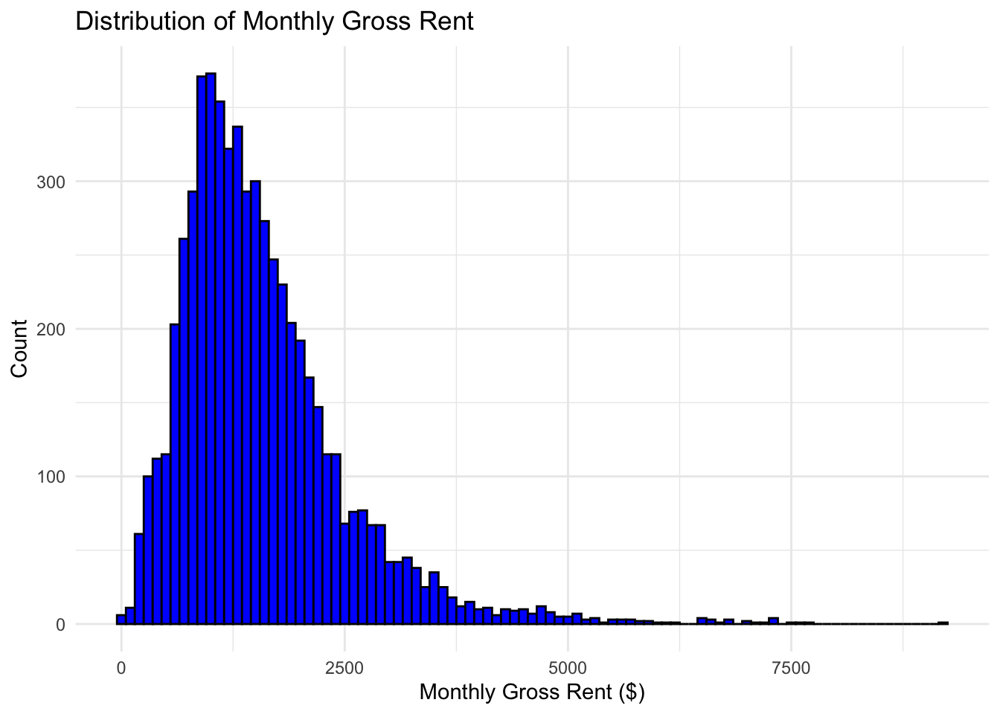
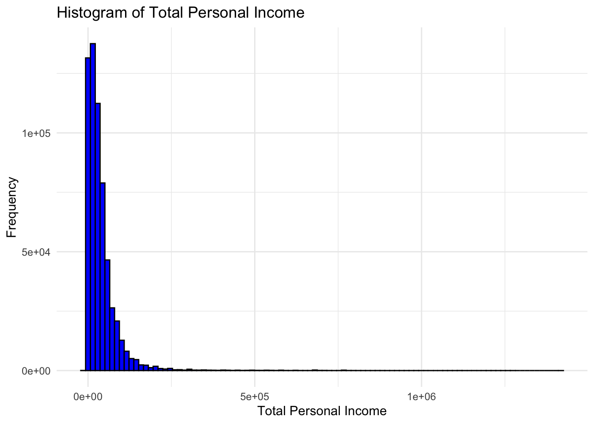
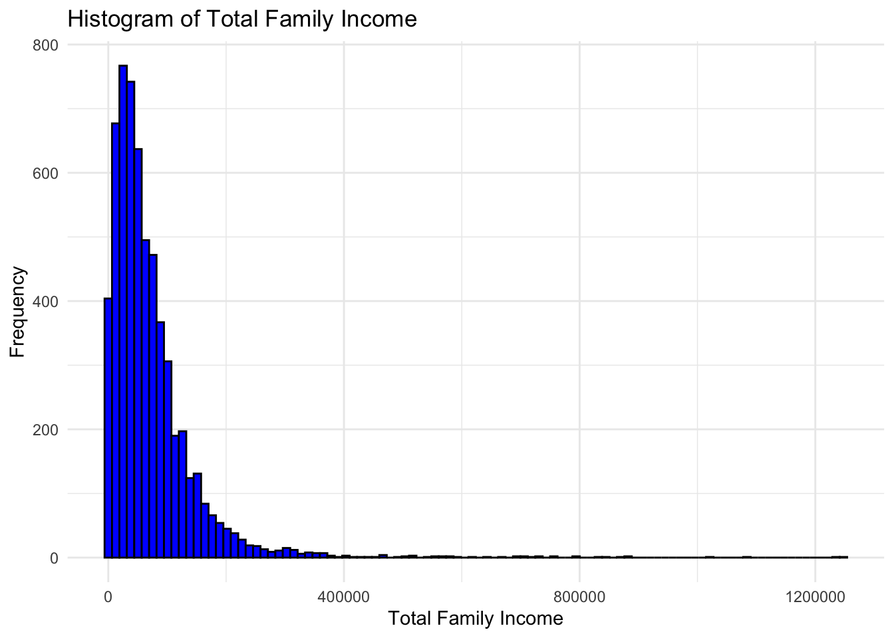
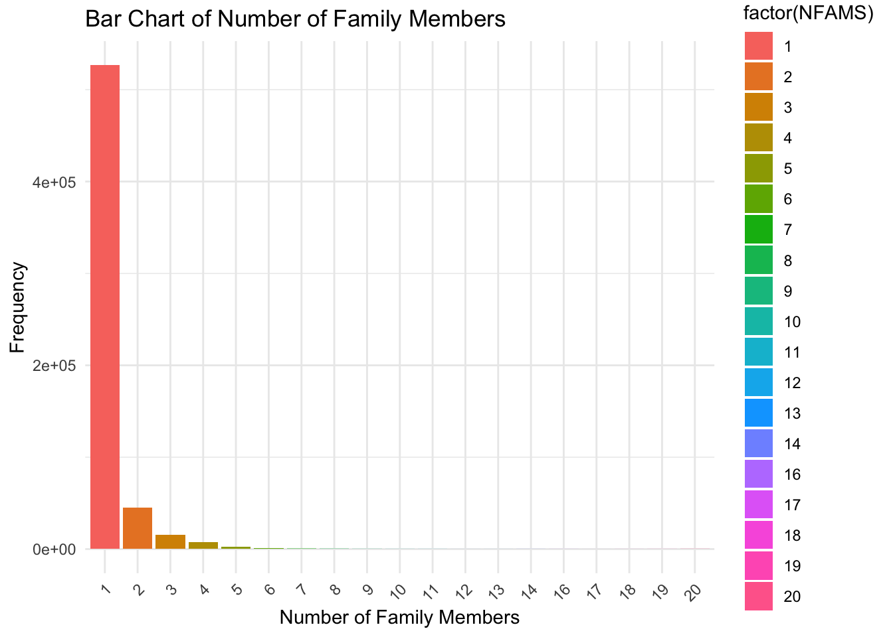
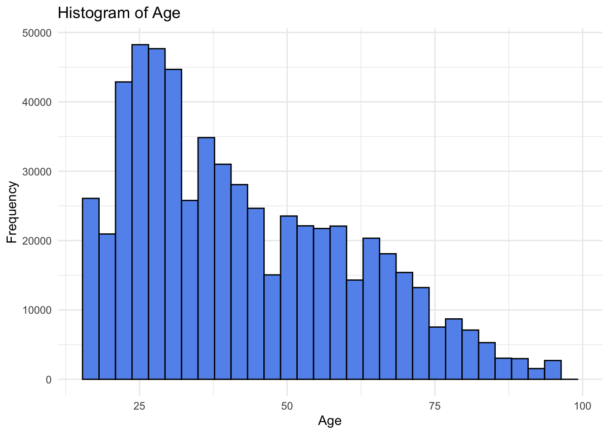
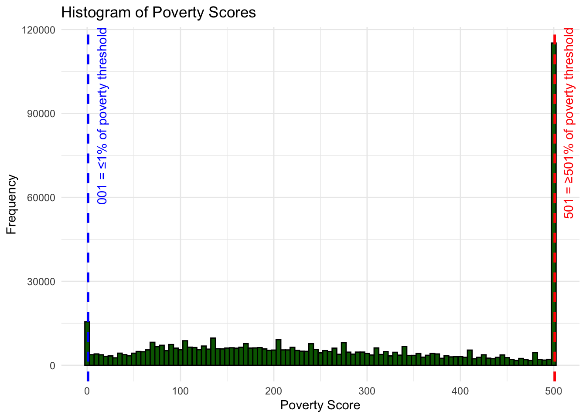
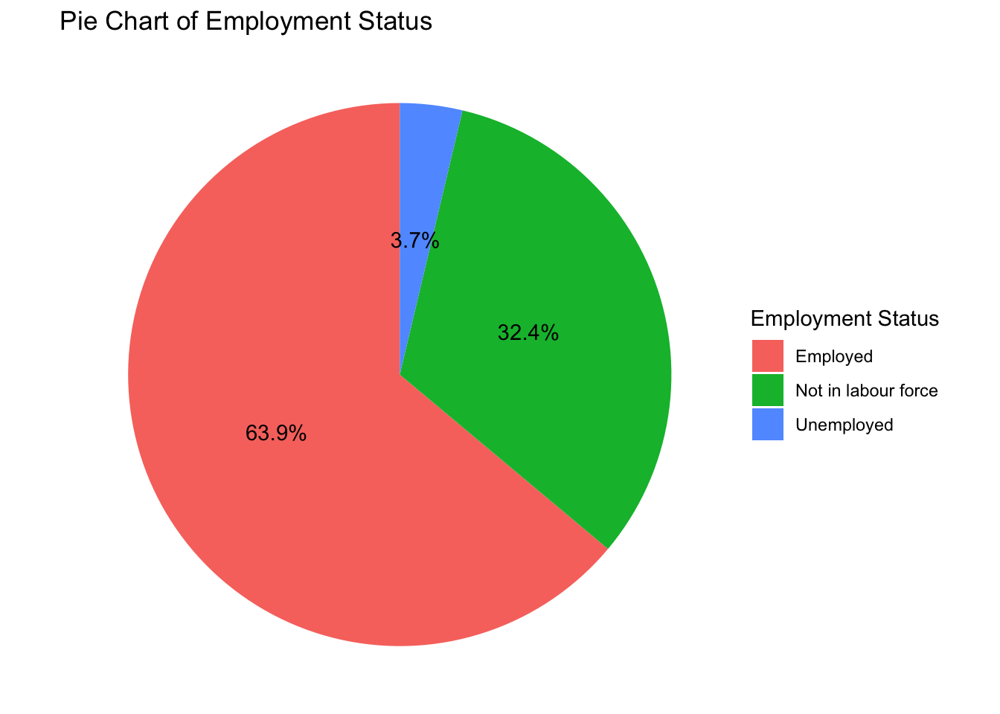
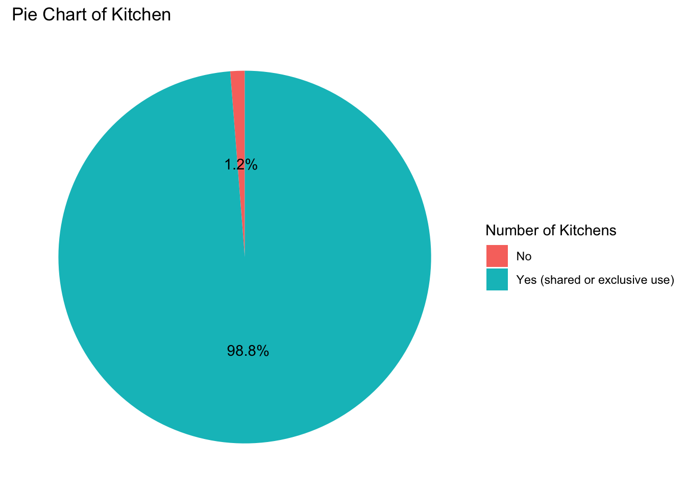
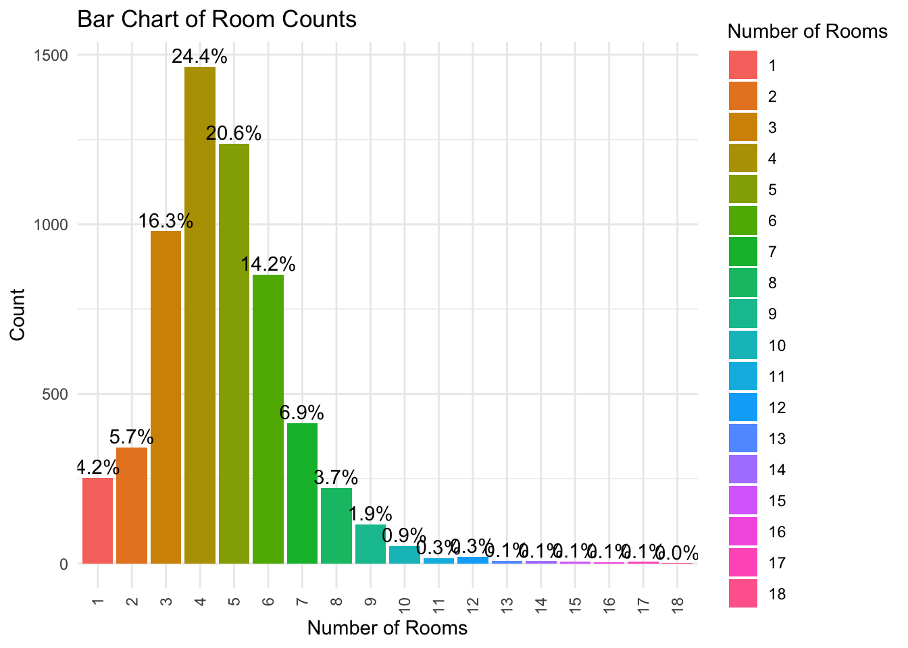

Incorporating the principles of data equity into our research on income and rent using IPUMS data enhances the study’s integrity and societal impact. The application of these principles ensures that our analysis is not only methodologically sound but also ethically conscious, especially in the context of housing affordability and equity.
How we present our data could influence: Racial equity (data involves race) Poverty equity (data involves poverty definition)
Transparency
Our research openly discusses the dataset’s scope, including its geographic coverage and time period, provided by the IPUMS. We detail how the data were collected, acknowledging the reliance on census and ACS, which might include self-reported income or housing expenses. This acknowledgment is crucial as it allows us to identify potential biases or inaccuracies inherent in the data. For example, certain groups may be underrepresented due to the methodology of data collection, or there might be inaccuracies in self-reported income or expenses that could affect the analysis of income and rent relationships.Furthermore, by being transparent about the dataset’s limitations, we aim to preemptively address any questions regarding the reliability and applicability of our findings.
Beneficence and Addressing Disparities
Our research utilizes the IPUMS data and aim to figure out disparities in housing affordability, particularly among marginalized communities. Through our analysis, we aim to identify areas, race groups where rent-to-income ratios are disproportionately different, where housing conditions may be inadequate, or where residents face significant utility burdens. Our intention is not merely to document disparities but to inform policy and intervention strategies that could alleviate such inequities. This means conducting our analysis with a clear purpose: to contribute to the discourse on housing equity and affordability in a way that is constructive and aimed at bringing about positive change. This approach aligns with the ethical obligation to use data in ways that can positively impact communities, especially those that are most vulnerable.
What aspect our data and analysis could possibly influence: Possible social context for housing data Possible policy context for housing data Policy decisions on the housing market Financial decisions among different housing owner/buyers Public perception of proverty
Problems and Challenges
We ran into a problem that the data wasn’t available for every year. So, we decided to focus on the data from 2022 since that was complete and the most up-to-date for our needs. For comparing how things have changed or stayed the same, we used data from the other years after we draw the conclusion based on 2022 dataset and do the comparsion based on it. This way, we could still make some good guesses about trends over time, using the best information we had.
Code Conversion: Our dataset contains variables with specific codes that represent distinct groups or sets of individuals. For clarity in our analysis, it is essential to accurately interpret these codes.
The table below summarizes all variables that possess this characteristic:
Variable
Description
Notes
INCTOT
Total personal income
Specific codes detailed below:
-009995 = -$9,900 (1980)
-000001 = Net loss (1950)
FTOTINC-000001 = Net loss (1950)
KITCHEN
Kitchen facilities
0 = N/A
1 = No
2 = No, or shared use
3 = Yes, shared use
4 = Yes (shared or exclusive use)
5 = Yes, exclusive use
MARST
Marital status
1 = Married, spouse present
2 = Married, spouse absent
3 = Separated
4 = Divorced
5 = Widowed
6 = Never married/single
9 = Blank, missing
RACE
Race
1 = White
2 = Black/African American
3 = American Indian or Alaska Native
4 = Chinese
5 = Japanese
6 = Other Asian or Pacific Islander
7 = Other race, nec
8 = Two major races
9 = Three or more major races
POVERTY
Poverty levels
001 = 1 percent or less of poverty threshold (including 0 or negative income)
501 = 501 percent or more of poverty threshold
EMPSTAT
Employment status
1 = Employed
2 = Unemployed
3 = Not in labor force
Data processing
# Load the cleaned data in class_blog 2library(dplyr)
Attaching package: 'dplyr'
The following objects are masked from 'package:stats':
filter, lag
The following objects are masked from 'package:base':
intersect, setdiff, setequal, union
library(forcats)library(here)
here() starts at /Users/yating/Desktop/Final Project MA415
#RACErent_data_clean <- rent_data_clean %>%mutate(RACE =case_when( RACE =="1"~"White", RACE =="2"~"Black/African American", RACE =="3"~"American Indian or Alaska Native", RACE =="4"~"Chinese", RACE =="5"~"Japanese", RACE =="6"~"Other Asian or Pacific Islander", RACE =="7"~"Other race, nec", RACE =="8"~"Two major races", RACE =="9"~"Three or more major races",TRUE~as.character(RACE) ))rent_data_clean$RACE <-as.factor(rent_data_clean$RACE)
#EMPSTATrent_data_clean <- rent_data_clean %>%mutate(EMPSTAT =case_when( EMPSTAT =="1"~"Employed", EMPSTAT =="2"~"Unemployed", EMPSTAT =="3"~"Not in labour force",TRUE~as.character(EMPSTAT) # This line should return the existing value of EMPSTAT ))rent_data_clean$EMPSTAT <-as.factor(rent_data_clean$EMPSTAT)
# A tibble: 7 × 5
variable Mean Median Min Max
<chr> <dbl> <dbl> <dbl> <dbl>
1 RENTGRS 1577. 1390 4 10700
2 ROOMS 4.68 4 1 20
3 AGE 42.6 38 16 97
4 FTOTINC 71601. 52000 -9300 1966000
5 POVERTY 269. 249 1 501
6 INCTOT 38071. 25000 -9380 1423200
7 NFAMS 1.21 1 1 20
Plots about the variables
RENTGRS
library(ggplot2) # Histogram to show distribution of monthly gross rentggplot(rent_data_clean, aes(x = RENTGRS)) +geom_histogram(binwidth =100, fill ="blue", color ="black") +labs(title ="Distribution of Monthly Gross Rent",x ="Monthly Gross Rent ($)",y ="Count") +theme_minimal()

The histogram appears to be right-skewed, with a mode somewhere before $3000. It suggests that the mean is likely to be higher than the median, which corresponds to the stats in the above section. There are a few bars past the $6000 mark, which could be considered outliers. There’s a wide range of rents; however, the majority of the data points fall below $3000, suggesting that while there are rents across a wide range.
2.INCTOT
ggplot(rent_data_clean, aes(x = INCTOT)) +geom_histogram(bins =100, fill ="blue", color ="black") +theme_minimal() +labs(title ="Histogram of Total Personal Income",x ="Total Personal Income",y ="Frequency")

The histogram shows a very high peak at the lower end of the income range, suggest a right-skewed distribution. This suggests that a significant portion of the population earns within this lower income bracket. But it is what I expected because it’s the most common income range in the datasets and our dataset is from census.
3.FTOTINC
ggplot(rent_data_clean, aes(x = FTOTINC)) +geom_histogram(bins =100, fill ="blue", color ="black") +theme_minimal() +labs(title ="Histogram of Total Family Income",x ="Total Family Income",y ="Frequency")

Simliarly as the INCTOT, the histogram shows that the distribution of total family income is right-skewed, meaning most families have an income toward the lower end of the scale, with fewer families earning higher incomes. The tail might include outliers, which are families with significantly higher incomes than the typical family and the variance and standard deviation are likely to be large.
4.NFAMS
nfams_counts <- rent_data_clean %>%group_by(NFAMS) %>%summarise(Count =n())ggplot(nfams_counts, aes(x =factor(NFAMS), y = Count, fill =factor(NFAMS))) +geom_bar(stat ="identity") +labs(title ="Bar Chart of Number of Family Members",x ="Number of Family Members",y ="Frequency") +theme_minimal() +theme(axis.text.x =element_text(angle =45, hjust =1))

The bar representing one family member is significantly taller than the others, indicating that single-person families are most common in this dataset. There is a rapid decrease in frequency as the number of family members increases. The families with a very large number of members are quite rare. This is what I expected and aligns with my understanding to common demographic trends.
5.Age
ggplot(rent_data_clean, aes(x = AGE)) +geom_histogram(bins =30, fill ="cornflowerblue", color ="black") +theme_minimal() +labs(title ="Histogram of Age",x ="Age",y ="Frequency")

6.POVERTY
p <-ggplot(rent_data_clean, aes(x = POVERTY)) +geom_histogram(binwidth =5, fill ="darkgreen", color ="black") +theme_minimal() +labs(title ="Histogram of Poverty Scores",x ="Poverty Score",y ="Frequency")p <- p +geom_vline(xintercept =1, color ="blue", linetype ="dashed", linewidth =1) +annotate("text", x =1, y =Inf, label ="001 = ≤1% of poverty threshold", angle =90, hjust =1, vjust =2, color ="blue") +geom_vline(xintercept =501, color ="red", linetype ="dashed", linewidth =1) +annotate("text", x =501, y =Inf, label ="501 = ≥501% of poverty threshold", angle =90, hjust =1, vjust =2, color ="red")print(p)

This variable has both upper and lower bounds. Therefore, the histogram is characterized by notable concentrations, indicating significant proportions of individuals or families at both ends of the poverty spectrum.
7.EMPSTAT
empstat_counts <- rent_data_clean %>%count(EMPSTAT) %>%mutate(Percentage = n /sum(n) *100)ggplot(empstat_counts, aes(x ="", y = n, fill = EMPSTAT)) +geom_bar(stat ="identity", width =1) +coord_polar(theta ="y") +theme_void() +geom_text(aes(label =sprintf("%1.1f%%", Percentage)), position =position_stack(vjust =0.5)) +labs(title ="Pie Chart of Employment Status", fill ="Employment Status")

Kitchen
kitchen_counts <- rent_data_clean %>%group_by(KITCHEN) %>%summarise(Count =n()) %>%mutate(Percentage = Count /sum(Count) *100)ggplot(kitchen_counts, aes(x ="", y = Count, fill =factor(KITCHEN))) +geom_bar(stat ="identity", width =1) +coord_polar(theta ="y") +theme_void() +geom_text(aes(label =sprintf("%1.1f%%", Percentage)), position =position_stack(vjust =0.5)) +labs(title ="Pie Chart of Kitchen",fill ="Number of Kitchens")

ROOMS
rooms_counts <- rent_data_clean %>%group_by(ROOMS) %>%summarise(Count =n()) %>%mutate(Percentage = Count /sum(Count) *100)ggplot(rooms_counts, aes(x =factor(ROOMS), y = Count, fill =factor(ROOMS))) +geom_bar(stat ="identity") +geom_text(aes(label =sprintf("%1.1f%%", Percentage), y = Count), vjust =-0.3, color ="black") +labs(title ="Bar Chart of Room Counts", x ="Number of Rooms", y ="Count") +scale_fill_discrete(name ="Number of Rooms") +theme_minimal() +theme(axis.text.x =element_text(angle =90, vjust =0.5, hjust=1))

RACE
race_counts <- rent_data_clean %>%group_by(RACE) %>%summarise(Count =n()) %>%mutate(Percentage = Count /sum(Count) *100)ggplot(race_counts, aes(x =factor(RACE), y = Count, fill =factor(RACE))) +geom_bar(stat ="identity") +geom_text(aes(label =sprintf("%1.1f%%", Percentage), y = Count), vjust =-0.3, color ="black") +labs(title ="Bar Chart of RACE", x ="RACE", y ="Count") +theme_minimal() +theme(axis.text.x =element_text(angle =90, vjust =0.5, hjust=0.5))
11.MARST
marst_counts <- rent_data_clean %>%group_by(MARST) %>%summarise(Count =n()) %>%mutate(Percentage = Count /sum(Count) *100)ggplot(marst_counts, aes(x =factor(MARST), y = Count, fill =factor(MARST))) +geom_bar(stat ="identity") +geom_text(aes(label =sprintf("%1.1f%%", Percentage), y = Count), vjust =-0.3, color ="black") +labs(title ="Bar Chart of Marital Status", x ="Marital Status", y ="Count", fill ="Marital Status Categories") +theme_minimal() +theme(axis.text.x =element_text(angle =45, hjust =1))